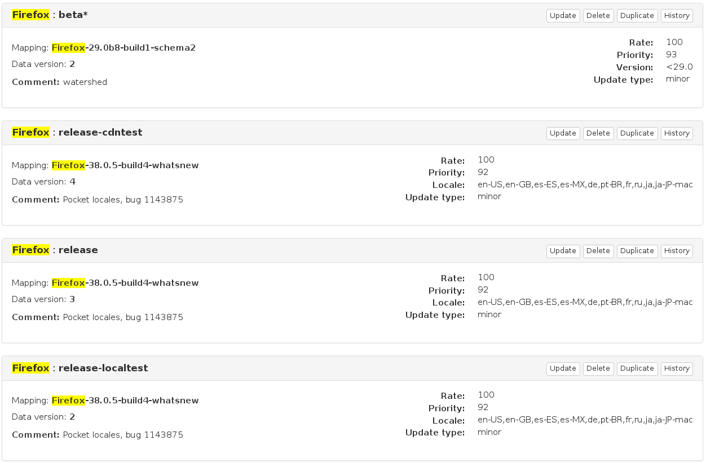

Balrog
Mozilla's Application Update Server

What's Balrog?
Balrog is the code name for the latest generation of Mozilla's Application Update Server (AUS). It's the first rewrite since 2006, and went into production in January 2015.
Balrog handles all update requests for Firefox, Thunderbird, Gecko Media Plugins, as well as some Fennec and FirefoxOS channels. Applications periodically contact Balrog to see if there's a newer version available.
It's Open Source
of course!
Anatomy of an update request
The URL that Firefox contacts is hardcoded in the app.update.url pref:
https://aus4.mozilla.org/update/3/%PRODUCT%/%VERSION%/%BUILD_ID%/...
%BUILD_TARGET%/%LOCALE%/%CHANNEL%/%OS_VERSION%/...
%DISTRIBUTION%/%DISTRIBUTION_VERSION%/update.xml
Firefox substitutes the %-enclosed variables at runtime, so the actual URL requested ends up being something like:
https://aus4.mozilla.org/update/3/Firefox/37.0a1/20141218030202/...
Linux_x86_64-gcc3/en-US/nightly/Linux%203.9-1-amd64%20(GTK%202.24.25)/...
default/default/update.xml
Balrog parses out each of these variables from the requested URL.
Anatomy of an update request
Balrog responds to requests with a small XML response that contains the location of the update MAR and a bunch of metadata about it, e.g.:
<updates>
<update type="minor" displayVersion="41.0a1" appVersion="41.0a1"
platformVersion="41.0a1" buildID="20150618030206">
<patch type="complete"
URL="http://download.cdn.mozilla.net/pub/mozilla.org/firefox/nightly/2015/06/2015-06-18-03-02-06-mozilla-central/firefox-41.0a1.en-US.linux-x86_64.complete.mar"
hashFunction="sha512"
hashValue="097d745696759cba29f85cb6df02f00476dc8189526e18cb9efaa70614631ef19c72014fffd3f1785d2ca9d0d1eeef22671a28a3069554c9a1581e240e743031"
size="56155786"/>
</update>
</updates>
Anatomy of an update request
Balrog maps the incoming request to a target release using an ordered set of rules. These rules match variables from the incoming request, and point at a release. Rules are sorted by a manually set priority, and the highest priority matching rule wins. Generally you're first concerned with Product and Channel first.
Anatomy of an update request
Looking at some update rules for "Firefox"
 TODO: could use some explanation here!Anatomy of an update request
There are currently 112 rules active in Balrog
- 43 for Firefox
- 18 for Fennec
- 15 for Thunderbird
- 14 for B2G
- 12 for GMP
Anatomy of an update request
In our example we match product="Firefox" and channel="nightly"
We can see the rule maps us to the "Firefox-mozilla-central-nightly-latest" blob.Release blobs
The releases that rules point at are JSON data structures (commonly referred to as "blobs") and contain the metadata that the XML is built from.
Blobs normally contain all of the data for one "release" across all platforms and locales. Eg: "Firefox-mozilla-central-nightly-20150608030201" has Firefox Nightly metadata from June 8. "Firefox-39.0b5-build1" has metadata from a recent Firefox Beta.
Release blobs
{
"hashFunction": "sha512",
"platforms": {
"WINNT_x86_64-msvc": {
"locales": {
"en-US": {
"buildID": "20150608030201",
"appVersion": "41.0a1",
"platformVersion": "41.0a1",
"partials": [
{
"fileUrl": "http://download.cdn.mozilla.net/pub/mozilla.org/firefox/nightly/2015/06/2015-06-08-03-02-01-mozilla-central/firefox-41.0a1.en-US.win64.partial.20150607030217-20150608030201.mar",
"from": "Firefox-mozilla-central-nightly-20150607030217",
"hashValue": "0d0dfc7cb5c6524f59662007285545ac0d4af0bb388c7cc06f691399796769ffc3a95c62f134df8803726cc6b3415e519186fc0b64e8ca60aaca5118652629ff",
"filesize": 7047272
}
],
"displayVersion": "41.0a1",
"completes": [
{
"fileUrl": "http://download.cdn.mozilla.net/pub/mozilla.org/firefox/nightly/2015/06/2015-06-08-03-02-01-mozilla-central/firefox-41.0a1.en-US.win64.complete.mar",
"from": "*",
"hashValue": "f392b260f250ad02728d12d8042424ed576edc263ccd891fd43b95f65ee7fbdd0205725f0f2fb6ff69ac2ce5c12aba2e2f627f4dfe49e15d4d2780fa2fffee41",
"filesize": 53419352
}
]
}
}
}
}
}